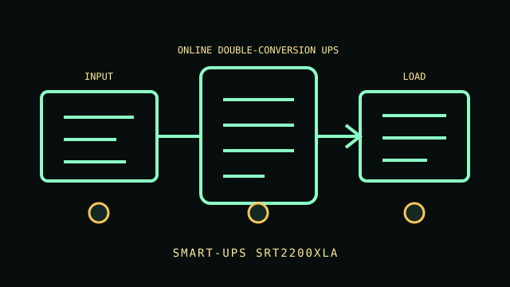

[ ONLINE DOUBLE-CONVERSION UPS // IDENTIFIED MODEL ]
Smart-UPS SRT2200XLA
2200 VA / 1980 W, 120 V North American online UPS. Six NEMA 5-20R outputs; confirm voltage/outlet setting and exact suffix. This record describes the named regional model only. Variants and accessories must be matched against the complete product label and manufacturer documentation.

ARCHIVAL IDENTIFICATION: Preserve the complete SKU, region, serial/date code, hardware/firmware revision, installed options and observed condition. Similar names do not establish electrical equivalence.
Exact model specifications
| Catalog category / topology | Online UPS — Online double-conversion UPS. |
|---|---|
| Electrical ratings | 2200 VA / 1980 W, 120 V North American online UPS. |
| Receptacles / connectors | Six NEMA 5-20R outputs; confirm voltage/outlet setting and exact suffix. |
| Battery / replacement / hot-swap | This UPS contains a sealed lead-acid battery; replace only with the exact manufacturer-approved part using the model-specific service procedure. Hot-swap is not assumed unless the manual permits it. Online double-conversion; LCD, USB/serial and SmartSlot option; sealed lead-acid hot-swappable pack with compatible external-battery support only per SRT manual. |
| Runtime / operating conditions | Use the manufacturer runtime curve at measured output watts with a fully charged, serviceable battery. Runtime varies with load/power factor, battery age and condition, charge state and ambient temperature; record these conditions for each test. |
| Network / monitoring interface | Model-specific local LCD/LED and/or USB/serial host signaling as identified in the model note; no native network management is assumed unless an optional supported network card is installed. |
| Electrical compatibility | Online double-conversion; LCD, USB/serial and SmartSlot option; sealed lead-acid hot-swappable pack with compatible external-battery support only per SRT manual. |
| Warnings / revision controls | Online double-conversion; LCD, USB/serial and SmartSlot option; sealed lead-acid hot-swappable pack with compatible external-battery support only per SRT manual. Verify complete suffix, electrical ratings, connectors, firmware/manual revision and regional certification against the actual nameplate before connecting equipment. |
Service and archival notes
- Photograph the nameplate, inlet/outlet map, serial/date code, status indicators and accessories; record load, input, environment and test date separately from manufacturer ratings.
- Do not infer runtime from a no-load self-test. Check battery age, alarms and condition; a replace-battery indicator or failed capacity test means runtime is unverified.
- Never open energized mains equipment. Do not energize cracked enclosures, damaged cords, overheated connectors, compromised grounding or swollen/leaking batteries.
- Online double-conversion; LCD, USB/serial and SmartSlot option; sealed lead-acid hot-swappable pack with compatible external-battery support only per SRT manual.
Manufacturer sources and manual
- APC manufacturer product search — Smart-UPS SRT2200XLAFind the manufacturer’s specification sheet for the exact named model and regional SKU.
- APC manuals / support libraryUse the user guide, service and safety instructions matching the label and revision. This static archive does not replace manufacturer documentation.